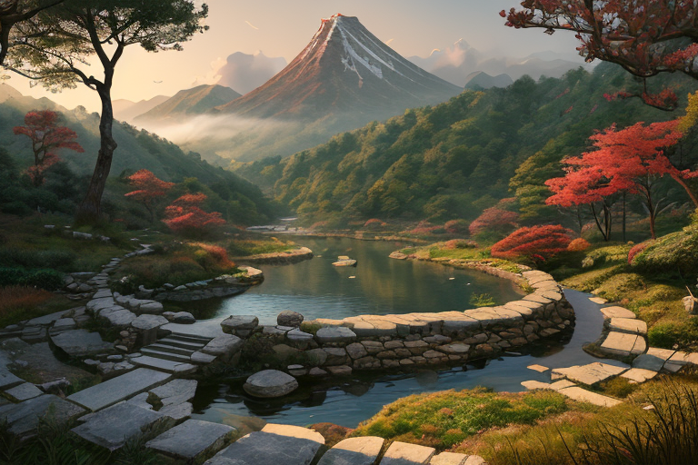
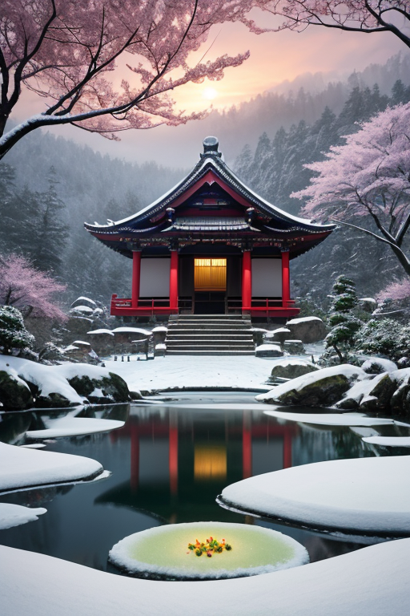
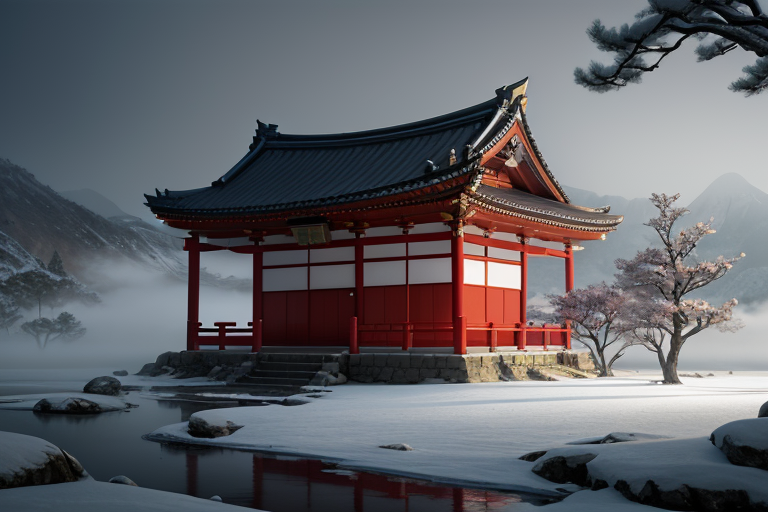
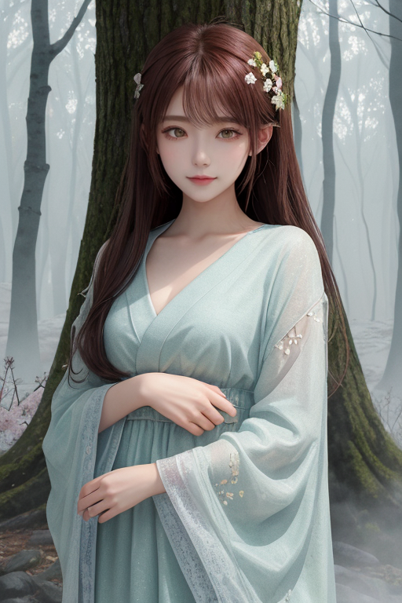
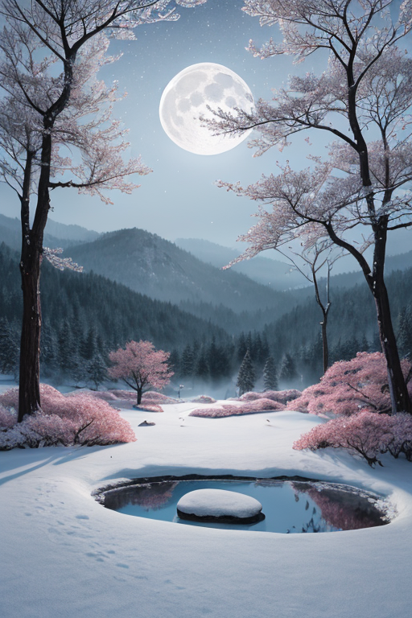

第一章 現実の山形
あなたはまだ気づいていない。この土地にも、王がいることを。
山寺、立石寺。千余段の石段を登り切った先は、深い静寂に満ちていた。松尾芭蕉が「閑かさや岩にしみ入る蝉の声」と詠んだその場所で、ヤマガリア・フルクトは立っていた。彼の目は、眼下に広がる山形盆地の、目には見えない地殻の「歪み」を見つめている。微細なひずみは、絶え間なく蓄積されていく。王の役目は、それを破局へ至らせないよう、ほんの少し、ほんのわずかに調整することだ。
彼は感情を持たない存在として遣わされた。しかし、この土地の空気――出羽三山に連なる修験道の祈り、長い冬を耐え忍ぶ蔵王の樹氷、最上川の流れのようにゆったりと続く時間――それらが、彼の内側に「何か」を育て始めていた。それは、この地の人々が「待つ」ことへの深い諦念と、どこか誇りにも似た感情を知る、初めての戸惑いだった。
「待つことは、敗北か？」
石段の脇から、そっと声がした。主席妖精フルッタが、朱と緑の衣を静かに揺らしながら現れる。彼女の目は、母のように穏やかだった。

第二章 歪みの兆候
蔵王の樹氷が、微かに軋んだ。それは物理的な音ではなく、地脈に沿って伝わる祈りのエネルギーの乱れだった。山寺の石段を一歩一歩踏みしめる修験者たちの集中が、ほんの一瞬、かすかな焦りに滲んだ。最上川の水面に映る空の色が、通常より僅かに早く暗転する。歪みの兆候は、常にこのように静かで、些細なものだ。
ヤマガリアは、銀山温泉の街並みを背景に立ち、目を閉じた。掌に浮かぶ朱と緑の紋章が、土地の「耐える力」の波長を伝えてくる。しかし、その波長に、今、珍しいほどの「揺らぎ」が混じっている。待ち侘びる心。先行きへの不安。それは、長い冬を前にした人々の胸に、目に見えぬ霜として降り始めていた。
「この揺らぎは…」彼が呟くと、傍らに立つフルッタが深く頷いた。
「大きな実りは、常に長い忍耐を要します。しかし、その忍耐が『ただの我慢』に変わるとき、心に亀裂が入るのです」
王は問いを繰り返した。待つことは、果たして――。その答えはまだ、彼の胸の内で、固く冷たい蕾のままだった。

第三章「王の葛藤」
蔵王の樹氷が、風に削られて呻く夜。王は山寺の根本中堂に佇み、己の内なる静寂と対峙していた。彼の掌からは、人々の「待つこと」への焦りと諦めが、冷たい霧のように流れ込んでくる。それは、春を待つ果樹園の不安であり、雪解けを待つ川沿いの町の、張り詰めた期待であった。
「調整は完了しています」とフルッタが囁く。「歪みは最小限に。しかし、人々の心の軋みは…消せません」
彼は無力ではなかった。地盤の緩みを繊細に繕い、雪崩の衝撃を一寸分散させ、最上川の増水をほんの一呼吸遅らせることさえできた。だが、人々が「待つ」という行為そのものに感じる苦痛を、彼はどうすることもできなかった。それは、王の星から授かった力の及ばぬ領域だった。
「待つことは、敗北か」
芭蕉がこの地で詠んだ「閑さや」の句は、静寂の中に全ての音を聞き取る覚悟を説く。王は目を閉じた。自分自身の内から湧き上がる、初めての「もどかしさ」という感情に耳を澄ます。それは、冷たい蕾の中心で、かすかに脈打つ、ほんのりとした温かみだった。

第四章 妖精との対話
蔵王の樹氷が、月光を静かに湛えていた。その冷たい森の奥、温泉の湯煙が立ち昇る一角で、王はフルッタの前に座っていた。彼女の手には、小さな木彫りの将棋の駒があった。
「この駒は、動く時を待っています」とフルッタは穏やかに言った。「動かないことは、無力ではありません。盤上の位置が、その駒に意味を与えるのです。人々の『待つ』という行為も同じ。ただじっとしているのではなく、その場所で、その時間を、魂の重さで満たしているのです」
王は黙って聞いた。彼の内側でうごめく「もどかしさ」は、消えはしなかった。
「出羽三山の修験者は、荒行の中で『待つ』ことを学びます。苦痛が過ぎ去るのを待つのではなく、苦痛そのものの中に、己が在る意味を見出すために」フルッタは湯気の向こうの王を見つめた。「あなたが感じるこの焦りは、敗北の証ではなく、この地の感情が、あなたという器に染み込んだ証。歪みを調整するのは力だけではありません。この地の魂が、どれほどの忍耐を蓄えているか、その『重さ』を知ることでも、ほんの少し、世界の傾きは変わるのです」
湯気がゆらりと揺れた。王は、自分の中の「もどかしさ」が、少しだけ静かな「観察」へと形を変えていくのを感じた。

第五章 微調整と余韻
蔵王の樹氷が、月光を静かに反射していた。ヤマガリア・フルクトは、その冷たい光景の中に立っていた。彼の手には、小さな将棋の駒が握られていた。角行。真っ直ぐに、そして遠くへ進む駒だ。彼はそれをそっと雪の上に置いた。駒は微かに沈み、ほんのわずか、雪面の傾きを変えた。
彼はもう、巨大な力を振るおうとは思わなかった。代わりに、この地に蓄積された「忍耐」の重さを、丁寧に感じ取ろうとした。最上川の流れが運ぶ時間、出羽三山に籠もる修験者の祈り、さくらんぼが赤く染まるまで待つ農家の息づかい。それら無数の「待つ意志」が織りなす精神的な網目を、彼はそっと整え始める。地震の歪みは消せない。だが、その歪みが人々の心に与える衝撃の波紋を、ほんの少しだけ、この地の「忍耐」というクッションで包み込む調整はできる。
フルッタがそっと肩に手を置いた。何も言わない。彼女の温もりが、すべてを物語っていた。王は目を閉じた。敗北ではない。この静かな営みこそが、この列島に派遣された彼の、唯一無二の戦いなのだ。
あなたの町にも、王がいる。